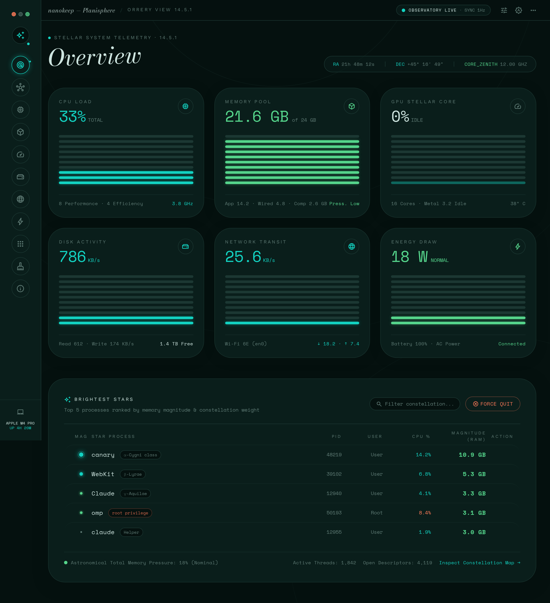
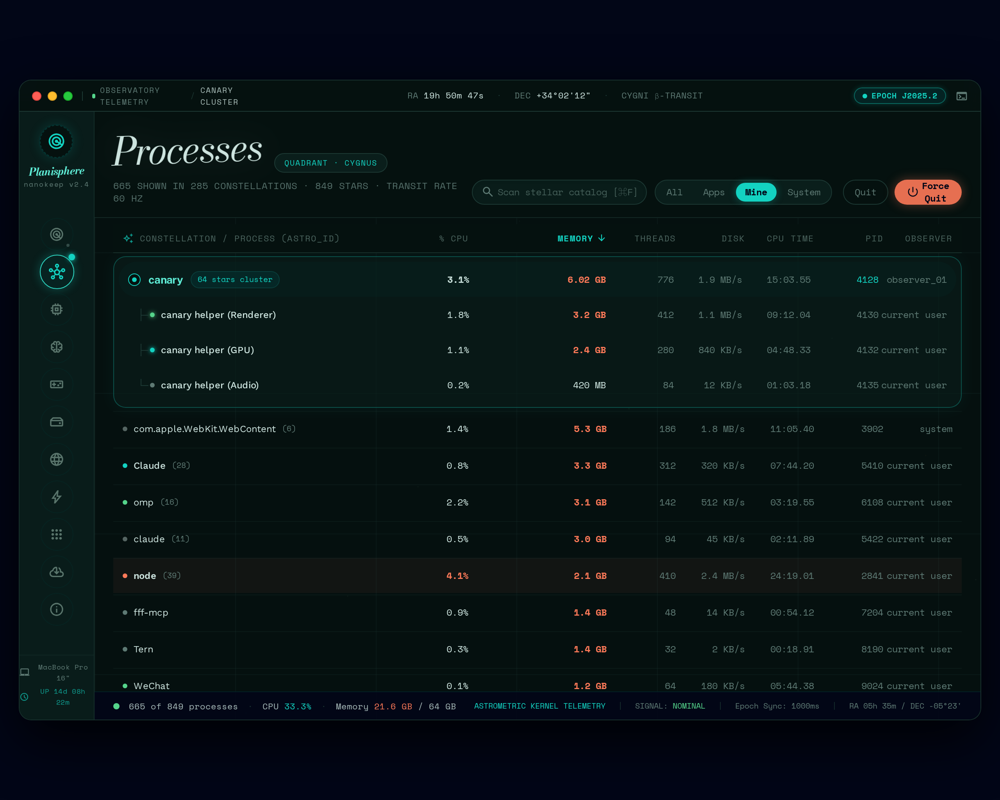
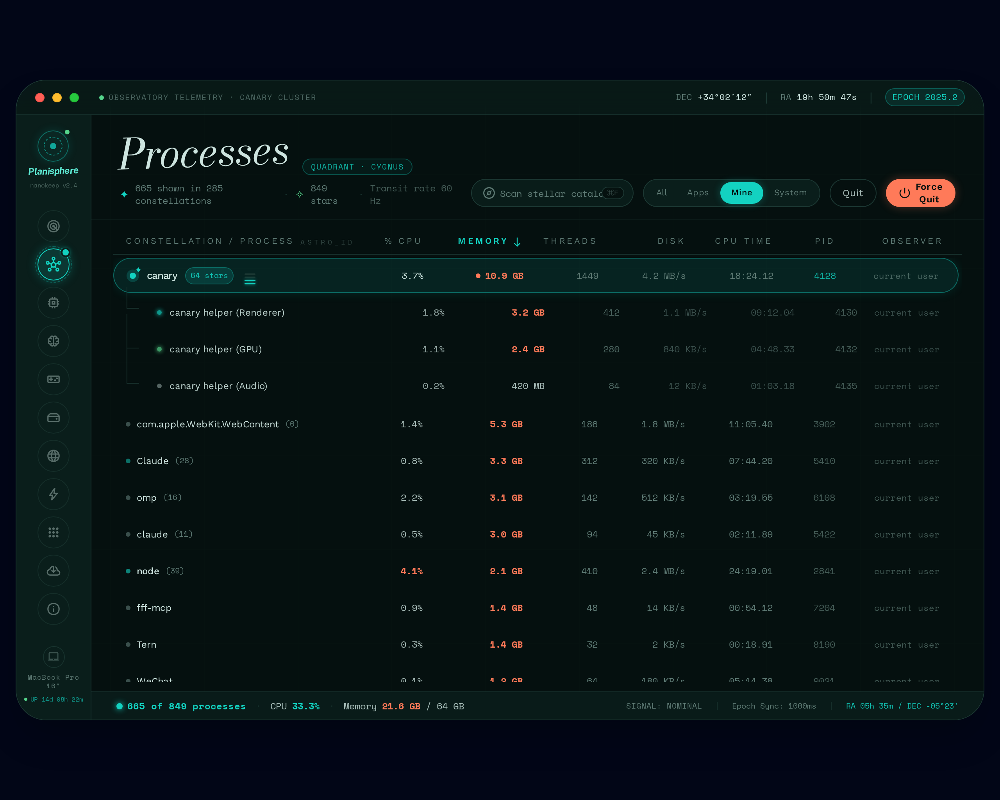
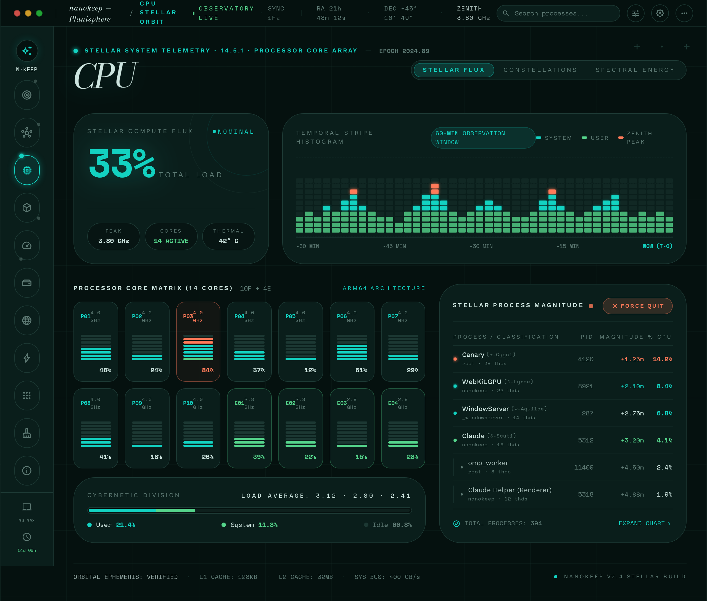
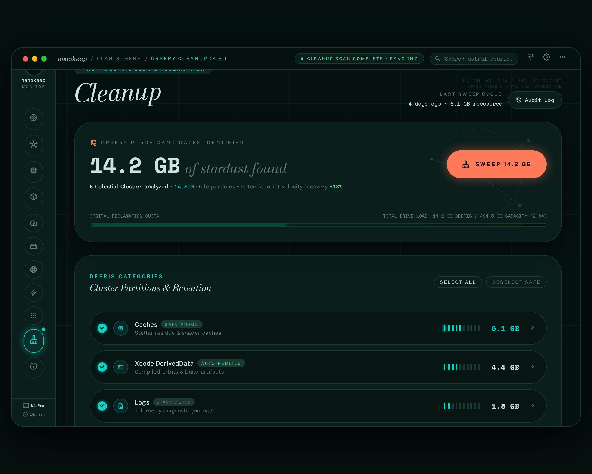

nanokeep · design system 02
Planisphere
A process monitor drawn as a planetarium star chart. Each process is a star. Each process group is a constellation. Every decision below came from one roll of the dice.
The rolls
- Metaphor
- star chart
- Mode
- dark
- Headline
- Bodoni Moda
- Body
- Work Sans
- Numbers
- Space Mono
- Roundness
- full pill
- Seed
- #13d2c1
- Accent 2
- #55d48b
- Accent 3
- #cde4df
- Load visual
- stacked stripes
- Navigation
- left rail
- Density
- airy
- Tilt
- −2°
- Base unit
- 3px
Color
Sky#05110F
Sky raised#0A1E1B
Constellation#13D2C1
Aurora#55D48B
Moonlight#CDE4DF
Dust#5E7A74
Nova#FF7A59
Hairline#1C3833
Type
Processes
Brightest stars tonight
Work Sans carries every sentence. It stays quiet so the numbers can speak.
Section label · 11px · 0.24em
33.3% · 21.6 GB · 2:06:06 · PID 18362
Stripe meter
CPU
33%
Memory
21.6GB
Thermal
91°C
Orbit rail
Controls
Constellation table
| Name | % CPU | Memory | Threads | PID |
|---|---|---|---|---|
| canary 64 | 3.7 | 10.9 GB | 1449 | 18362 |
| canary Helper (GPU) | 1.9 | 2.4 GB | 41 | 18370 |
| canary Helper (Renderer) | 0.8 | 812 MB | 22 | 18391 |
| com.apple.WebKit.WebContent 6 | 0.0 | 5.3 GB | 58 | 3661 |
| Claude 28 | 0.3 | 3.3 GB | 392 | 5755 |
Screens
Open the live Observatory prototype →




